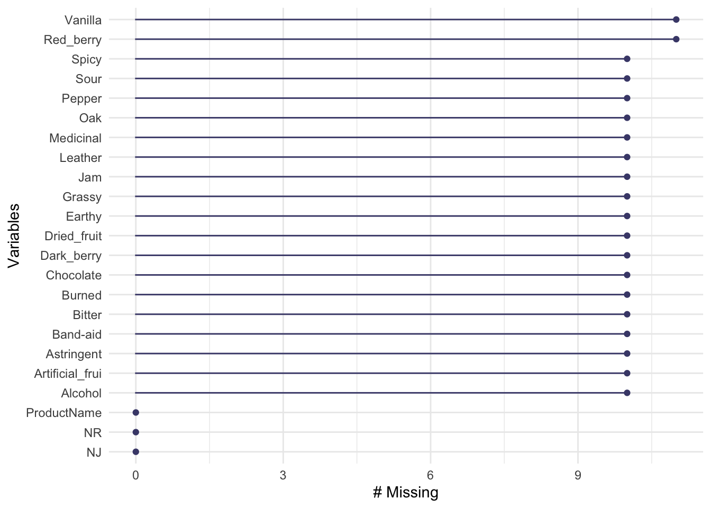

Chapter 1 Data import and set up
In the original R Opus, HGH presented datasets from actual research conducted in her lab, that she worked with throughout. I think this is a great approach, and with her permission we’re going to replicate her work, almost step for step, on the same datasets. Here, we’ll review how to get them loaded and familiarize ourselves with them.
1.1 Exploring our data
Most of the R Opus concerns 4 datasets. Let’s import them and inspect them. We’re going to use the tidyverse set of packages for basic data import and wrangling.
library(tidyverse)
library(here) # easy file navigation
descriptive_data <- read_csv(here("data/torriDAFinal.csv"))
consumer_data <- read_csv(here("data/torriconsFinal.csv"))
sorting_data <- read_csv(here("data/sorting_r1.csv"))
missing_data_example <-read_csv(here("data/torrimiss.csv"))We’ve now created four data tables (called “tibbles” in the tidyverse parlance) with our data, which you can see in your Environment. Let’s look at each of these.
1.1.1 The descriptive data
## Rows: 336
## Columns: 23
## $ NJ <dbl> 1331, 1331, 1331, 1331, 1331, 1331, 1331, 1331, 1400, …
## $ ProductName <chr> "C_MERLOT", "C_SYRAH", "C_ZINFANDEL", "C_REFOSCO", "I_…
## $ NR <dbl> 7, 7, 7, 7, 7, 7, 7, 7, 7, 7, 7, 7, 7, 7, 7, 7, 7, 7, …
## $ Red_berry <dbl> 5.1, 5.6, 4.9, 5.0, 3.3, 5.7, 2.9, 3.2, 0.1, 1.6, 4.5,…
## $ Dark_berry <dbl> 5.8, 1.9, 2.6, 1.9, 7.2, 3.6, 5.1, 6.0, 0.1, 0.7, 2.9,…
## $ Jam <dbl> 2.1, 3.9, 1.4, 7.8, 0.5, 8.7, 8.7, 4.0, 0.2, 0.0, 0.3,…
## $ Dried_fruit <dbl> 4.7, 1.2, 5.9, 0.6, 5.8, 1.9, 0.4, 0.7, 2.9, 6.4, 2.4,…
## $ Artificial_frui <dbl> 1.0, 7.9, 0.8, 6.6, 0.7, 7.4, 6.2, 4.1, 0.1, 0.1, 0.1,…
## $ Chocolate <dbl> 2.9, 1.0, 2.0, 6.4, 2.1, 3.3, 3.4, 3.6, 0.2, 1.0, 0.2,…
## $ Vanilla <dbl> 5.0, 8.3, 2.7, 5.5, 1.3, 6.9, 8.1, 4.8, 2.0, 0.8, 1.9,…
## $ Oak <dbl> 5.0, 2.3, 5.6, 3.6, 2.1, 1.5, 1.8, 2.6, 3.0, 5.4, 6.1,…
## $ Burned <dbl> 1.4, 1.8, 1.9, 3.2, 5.6, 0.2, 0.4, 4.7, 7.5, 5.1, 0.3,…
## $ Leather <dbl> 2.3, 3.5, 4.3, 0.3, 6.5, 1.5, 4.1, 6.5, 0.7, 0.8, 0.2,…
## $ Earthy <dbl> 0.6, 1.0, 0.6, 0.2, 4.7, 0.3, 0.5, 1.9, 0.7, 3.0, 1.3,…
## $ Spicy <dbl> 3.2, 0.7, 1.4, 2.9, 0.7, 3.1, 0.7, 1.4, 0.3, 3.2, 3.1,…
## $ Pepper <dbl> 5.4, 3.0, 4.1, 0.9, 2.8, 1.6, 3.6, 4.5, 0.1, 2.0, 0.9,…
## $ Grassy <dbl> 2.1, 0.6, 3.6, 1.8, 3.8, 0.9, 2.3, 0.8, 0.1, 1.3, 0.4,…
## $ Medicinal <dbl> 0.4, 2.2, 1.7, 0.2, 2.6, 0.5, 0.2, 3.8, 0.1, 2.1, 0.1,…
## $ `Band-aid` <dbl> 0.4, 0.4, 0.1, 0.2, 5.1, 1.2, 0.2, 6.2, 0.1, 1.1, 0.1,…
## $ Sour <dbl> 5.0, 9.7, 7.8, 8.3, 7.6, 7.2, 5.9, 6.3, 5.7, 6.4, 5.4,…
## $ Bitter <dbl> 5.9, 5.2, 3.5, 3.0, 1.9, 9.8, 2.9, 0.2, 0.6, 2.9, 0.1,…
## $ Alcohol <dbl> 9.0, 7.2, 4.7, 8.9, 2.8, 8.7, 1.6, 7.0, 1.6, 5.4, 4.9,…
## $ Astringent <dbl> 8.7, 8.3, 5.0, 7.8, 5.9, 8.0, 2.6, 4.2, 5.5, 5.1, 5.9,…The descriptive_data file, read from torriDAFinal.csv, contains results from a descriptive analysis (DA) of wines, I believe from California and Italy (more on that in a minute). Each row contains the observation of multiple variables (columns) from a single judge (NJ) on a single wine (ProductName) in a single replicate (NR). That means we have 20 measured, quantitative sensory variables (Red_berry:Astringent), and the other three variables (judge, wine, rep) are ID or classifying variables. These data are not tidy; each row has multiple variables.
We can learn a little more about these data before we move on: let’s figure out how many samples, how many judges, and how many reps we have:
# There are 14 judges, each of whom completed the same number of observations
descriptive_data %>%
count(NJ, sort = TRUE)## # A tibble: 14 × 2
## NJ n
## <dbl> <int>
## 1 1331 24
## 2 1400 24
## 3 1401 24
## 4 1402 24
## 5 1404 24
## 6 1405 24
## 7 1408 24
## 8 1409 24
## 9 1412 24
## 10 1413 24
## 11 1414 24
## 12 1415 24
## 13 1416 24
## 14 1417 24## # A tibble: 3 × 2
## NR n
## <dbl> <int>
## 1 7 112
## 2 8 112
## 3 9 112## # A tibble: 8 × 2
## ProductName n
## <chr> <int>
## 1 C_MERLOT 42
## 2 C_REFOSCO 42
## 3 C_SYRAH 42
## 4 C_ZINFANDEL 42
## 5 I_MERLOT 42
## 6 I_PRIMITIVO 42
## 7 I_REFOSCO 42
## 8 I_SYRAH 42The %>% operator is called the pipe, and it takes whatever is on its left side and passes it on to the right side. You can learn more about the pipe, but you can also just experiment. When you see it in code, you can read it as “…and then…”, so above we’d say something like “take descriptive_data and then count the number of times each NJ value occurs”. The other thing to know about piping, that you will see in some code in the R Opus, is the use of the period, ., as a “pronoun” for whatever is getting passed from the previous line. This lets you tell the pipe where in the line you want the output from the previous/left side to end up:
# Take the descriptive data
descriptive_data %>%
# AND THEN run 1-way ANOVA, with descriptive_data passed to the `data =` argument of aov()
aov(Jam ~ ProductName, data = .) %>%
# AND THEN print the readable summary of the results of aov()
summary()## Df Sum Sq Mean Sq F value Pr(>F)
## ProductName 7 280.6 40.08 7.882 7.74e-09 ***
## Residuals 328 1667.9 5.08
## ---
## Signif. codes: 0 '***' 0.001 '**' 0.01 '*' 0.05 '.' 0.1 ' ' 1Turns out that Jam attribute might vary by product. We’ll see.
1.1.2 Consumer data
Let’s look at the data in consumer_data:
## Rows: 106
## Columns: 13
## $ Judge <dbl> 1, 2, 3, 4, 5, 6, 7, 8, 9, 10, 11, 12, 13, 14, 15, 16…
## $ `Wine Frequency` <dbl> 2, 3, 3, 3, 2, 3, 2, 2, 1, 2, 2, 2, 1, 1, 1, 4, 1, 1,…
## $ `IT frequency` <dbl> 3, 4, 1, 2, 3, 3, 4, 3, 3, 4, 3, 3, 3, 3, 3, 1, 3, 4,…
## $ Gender <dbl> 2, 2, 1, 2, 1, 1, 2, 1, 1, 2, 1, 2, 1, 2, 1, 2, 2, 2,…
## $ Age <dbl> 22, 21, 25, 24, 31, 60, 24, 25, 26, 40, 40, 22, 23, 2…
## $ C_MERLOT <dbl> 5, 8, 8, 4, 4, 4, 8, 5, 7, 7, 7, 8, 6, 4, 4, 2, 3, 7,…
## $ C_SYRAH <dbl> 4, 5, 6, 6, 6, 4, 6, 4, 5, 1, 8, 8, 4, 2, 4, 1, 8, 6,…
## $ C_ZINFANDEL <dbl> 3, 8, 6, 3, 6, 4, 7, 6, 6, 4, 6, 7, 6, 8, 6, 7, 9, 7,…
## $ C_REFOSCO <dbl> 8, 5, 8, 4, 7, 4, 6, 6, 3, 6, 3, 7, 8, 4, 6, 1, 8, 8,…
## $ I_MERLOT <dbl> 7, 4, 7, 8, 2, 3, 8, 7, 6, 5, 3, 3, 3, 3, 4, 1, 6, 7,…
## $ I_SYRAH <dbl> 2, 8, 5, 4, 6, 3, 6, 4, 6, 8, 2, 4, 8, 7, 3, 4, 4, 8,…
## $ I_PRIMITIVO <dbl> 4, 4, 7, 9, 5, 4, 4, 4, 6, 1, 1, 2, 7, 3, 4, 2, 7, 6,…
## $ I_REFOSCO <dbl> 6, 6, 7, 2, 7, 1, 7, 3, 3, 2, 4, 3, 7, 5, 4, 4, 6, 7,…Here we have consumer acceptance testing data on the same 8 wines from the DA. The rows look like they represent consumers, identified by the Judge column. Let’s check to see if they’re all unique:
consumer_data %>%
# The sort = TRUE argument would put anyone with multiple rows at the top
count(Judge, sort = TRUE)## # A tibble: 106 × 2
## Judge n
## <dbl> <int>
## 1 1 1
## 2 2 1
## 3 3 1
## 4 4 1
## 5 5 1
## 6 6 1
## 7 7 1
## 8 8 1
## 9 9 1
## 10 10 1
## # ℹ 96 more rowsThen we have some consumption data (Wine Frequency and IT Frequency) and some demographic data (Gender and Age), and then 8 columns representing each judge’s rating for each wine. Doesn’t look like we have any replication or any incomplete data. Again, this is not tidy data–each row contains multiple observations beyond the classifying/identifying data. We’ll come back to that.
1.1.3 The other data frames
The other two data frames we’re going to pay less attention to for now. The first, missing_data_example, is the same data frame as descriptive_data but with missing data introduced on purpose for didactic purposes. We can use the naniar package to quickly learn a litle bit about the missingness:

We could also use the useful skimr package to give us an informative data summary that would tell us about missingness:
##
## Attaching package: 'skimr'## The following object is masked from 'package:naniar':
##
## n_completeskim(missing_data_example) %>%
# This is purely to allow the skimr::skim() to be rendered in PDF, ignore otherwise
knitr::kable()| skim_type | skim_variable | n_missing | complete_rate | character.min | character.max | character.empty | character.n_unique | character.whitespace | numeric.mean | numeric.sd | numeric.p0 | numeric.p25 | numeric.p50 | numeric.p75 | numeric.p100 | numeric.hist |
|---|---|---|---|---|---|---|---|---|---|---|---|---|---|---|---|---|
| character | ProductName | 0 | 1.0000000 | 7 | 11 | 0 | 8 | 0 | NA | NA | NA | NA | NA | NA | NA | NA |
| numeric | NJ | 0 | 1.0000000 | NA | NA | NA | NA | NA | 1403.3571429 | 20.8589537 | 1331 | 1402.000 | 1408.50 | 1414.000 | 1417.0 | ▁▁▁▁▇ |
| numeric | NR | 0 | 1.0000000 | NA | NA | NA | NA | NA | 8.0000000 | 0.8177143 | 7 | 7.000 | 8.00 | 9.000 | 9.0 | ▇▁▇▁▇ |
| numeric | Red_berry | 11 | 0.9672619 | NA | NA | NA | NA | NA | 2.8473846 | 2.5294746 | 0 | 0.500 | 2.30 | 4.800 | 9.2 | ▇▅▂▂▁ |
| numeric | Dark_berry | 10 | 0.9702381 | NA | NA | NA | NA | NA | 3.0953988 | 2.7778038 | 0 | 0.500 | 2.30 | 5.075 | 9.9 | ▇▃▃▂▂ |
| numeric | Jam | 10 | 0.9702381 | NA | NA | NA | NA | NA | 1.8773006 | 2.4022502 | 0 | 0.200 | 0.70 | 2.700 | 10.0 | ▇▂▁▁▁ |
| numeric | Dried_fruit | 10 | 0.9702381 | NA | NA | NA | NA | NA | 1.8104294 | 2.1395934 | 0 | 0.200 | 0.70 | 3.275 | 10.0 | ▇▂▂▁▁ |
| numeric | Artificial_frui | 10 | 0.9702381 | NA | NA | NA | NA | NA | 1.1996933 | 1.9710598 | 0 | 0.100 | 0.30 | 1.200 | 9.7 | ▇▁▁▁▁ |
| numeric | Chocolate | 10 | 0.9702381 | NA | NA | NA | NA | NA | 1.2131902 | 1.7648302 | 0 | 0.100 | 0.40 | 1.675 | 10.0 | ▇▁▁▁▁ |
| numeric | Vanilla | 11 | 0.9672619 | NA | NA | NA | NA | NA | 1.6673846 | 1.9758529 | 0 | 0.200 | 0.90 | 2.600 | 9.3 | ▇▂▁▁▁ |
| numeric | Oak | 10 | 0.9702381 | NA | NA | NA | NA | NA | 2.3024540 | 1.9957632 | 0 | 0.500 | 1.70 | 3.900 | 9.0 | ▇▃▃▁▁ |
| numeric | Burned | 10 | 0.9702381 | NA | NA | NA | NA | NA | 1.5070552 | 2.0622868 | 0 | 0.100 | 0.40 | 2.375 | 9.7 | ▇▂▁▁▁ |
| numeric | Leather | 10 | 0.9702381 | NA | NA | NA | NA | NA | 1.4659509 | 2.0566530 | 0 | 0.100 | 0.40 | 2.400 | 9.9 | ▇▂▁▁▁ |
| numeric | Earthy | 10 | 0.9702381 | NA | NA | NA | NA | NA | 1.0929448 | 1.5826888 | 0 | 0.100 | 0.40 | 1.375 | 8.0 | ▇▁▁▁▁ |
| numeric | Spicy | 10 | 0.9702381 | NA | NA | NA | NA | NA | 1.2015337 | 1.6742477 | 0 | 0.100 | 0.40 | 1.800 | 8.9 | ▇▂▁▁▁ |
| numeric | Pepper | 10 | 0.9702381 | NA | NA | NA | NA | NA | 1.5165644 | 2.0514989 | 0 | 0.200 | 0.50 | 2.300 | 10.0 | ▇▁▁▁▁ |
| numeric | Grassy | 10 | 0.9702381 | NA | NA | NA | NA | NA | 0.9361963 | 1.4584638 | 0 | 0.100 | 0.30 | 1.100 | 9.8 | ▇▁▁▁▁ |
| numeric | Medicinal | 10 | 0.9702381 | NA | NA | NA | NA | NA | 1.4276074 | 2.0269504 | 0 | 0.100 | 0.40 | 2.000 | 9.6 | ▇▁▁▁▁ |
| numeric | Band-aid | 10 | 0.9702381 | NA | NA | NA | NA | NA | 1.2061350 | 2.0478189 | 0 | 0.100 | 0.30 | 1.075 | 9.8 | ▇▁▁▁▁ |
| numeric | Sour | 10 | 0.9702381 | NA | NA | NA | NA | NA | 4.6199387 | 2.9908889 | 0 | 1.625 | 4.85 | 7.100 | 10.0 | ▇▅▇▆▅ |
| numeric | Bitter | 10 | 0.9702381 | NA | NA | NA | NA | NA | 3.4236196 | 2.7514405 | 0 | 1.000 | 3.00 | 5.200 | 10.0 | ▇▅▃▂▂ |
| numeric | Alcohol | 10 | 0.9702381 | NA | NA | NA | NA | NA | 3.6058282 | 2.4028950 | 0 | 1.200 | 4.05 | 5.200 | 9.5 | ▇▃▇▃▁ |
| numeric | Astringent | 10 | 0.9702381 | NA | NA | NA | NA | NA | 4.6358896 | 2.6451989 | 0 | 2.500 | 4.70 | 6.400 | 10.0 | ▆▆▇▅▃ |
Because the only difference between this data table and the descriptive_data table is the introduced missingness we’re not going to pay much attention to it until we get to dealing with missing data.
The sorting_data data frame contains results from a sorting task in which 15 subjects (1 per column) sorted the same wines into disjoint groups according to their own criteria. If in a column two wines have the same label (say, G1), that subject put them in the same group. We’ll get to how to deal with this kind of data later on, so we’re not going to go into more depth here.
## # A tibble: 8 × 16
## wine `263` `1331` `1400` `1401` `1402` `1404` `1405` `1408` `1409` `1412`
## <chr> <chr> <chr> <chr> <chr> <chr> <chr> <chr> <chr> <chr> <chr>
## 1 I_REFOSCO G6 G3 G5 G4 G5 G4 G2 G2 G1 G1
## 2 I_MERLOT G1 G3 G4 G3 G2 G3 G4 G3 G1 G2
## 3 I_SYRAH G5 G4 G2 G1 G1 G2 G1 G4 G1 G2
## 4 I_PRIMIT… G2 G1 G3 G1 G4 G5 G3 G4 G3 G2
## 5 C_SYRAH G3 G2 G4 G4 G5 G6 G1 G3 G2 G4
## 6 C_REFOSCO G4 G3 G1 G2 G5 G5 G2 G1 G2 G3
## 7 C_MERLOT G1 G2 G3 G3 G3 G1 G4 G3 G2 G2
## 8 C_ZINFAN… G1 G5 G3 G3 G2 G1 G1 G3 G1 G2
## # ℹ 5 more variables: `1413` <chr>, `1414` <chr>, `1415` <chr>, `1416` <chr>,
## # `1417` <chr>1.2 Wrangling/tidying data
Whenever we do data analysis, about 90% of the effort is getting the data into the right shape for the analysis at hand. We’re going to be employing many approaches to this task throughout the R Opus, but here we’ll do a quick preparatory analysis with our two untidy data frames.
The pivot_longer() function in dplyr is built to take data in the many-observations-per-row format (often called “wide” data) and bring it into a longer, “tidier” representation that is often easier to work with. For the descriptive_data, a natural format that would be easier to work with is one in which all the descriptors are pivoted into two columns: one labeling the descriptor by name, and the other giving the rated value. We’d do that as follows:
descriptive_data_tidy <-
descriptive_data %>%
pivot_longer(cols = -c(NJ, NR, ProductName),
names_to = "descriptor",
values_to = "rating")
descriptive_data_tidy## # A tibble: 6,720 × 5
## NJ ProductName NR descriptor rating
## <dbl> <chr> <dbl> <chr> <dbl>
## 1 1331 C_MERLOT 7 Red_berry 5.1
## 2 1331 C_MERLOT 7 Dark_berry 5.8
## 3 1331 C_MERLOT 7 Jam 2.1
## 4 1331 C_MERLOT 7 Dried_fruit 4.7
## 5 1331 C_MERLOT 7 Artificial_frui 1
## 6 1331 C_MERLOT 7 Chocolate 2.9
## 7 1331 C_MERLOT 7 Vanilla 5
## 8 1331 C_MERLOT 7 Oak 5
## 9 1331 C_MERLOT 7 Burned 1.4
## 10 1331 C_MERLOT 7 Leather 2.3
## # ℹ 6,710 more rowsNow we have kept our 3 ID or classifying variables and created a 4th, descriptor, which together uniquely describe each numeric observation, now called rating. In our newly tidied dataset, the first line give the rating–the observation–for the judge with code 1331, in rep 7, for the wine C_MERLOT, for the Red_berry descriptor. It’s 5.1.
To motivate this kind of work, let’s quickly talk about the “split-apply-combine” workflow this enables. Now that we’ve separated out our classifying variables, we can do work with them much more easily. For example, let’s say we want to generate a means table comparing the wines on the Jam variable, which we know from our example above seems to vary per wine. We can now do this very easily:
descriptive_data_tidy %>%
# First we will use filter() to get only Jam observations
filter(descriptor == "Jam") %>%
# Then we will use group_by() to identify our wines as the relevant classifying variable
group_by(ProductName) %>%
# Finally, we'll use the summarize() function to generate a quick per-wine summary
summarize(mean_jam_score = mean(rating),
se_jam_score = sd(rating) / sqrt(n()),
lower_95 = mean_jam_score - 1.96 * se_jam_score,
upper_95 = mean_jam_score + 1.96 * se_jam_score)## # A tibble: 8 × 5
## ProductName mean_jam_score se_jam_score lower_95 upper_95
## <chr> <dbl> <dbl> <dbl> <dbl>
## 1 C_MERLOT 1.37 0.262 0.857 1.89
## 2 C_REFOSCO 1.03 0.238 0.565 1.50
## 3 C_SYRAH 1.75 0.378 1.00 2.49
## 4 C_ZINFANDEL 1.98 0.394 1.21 2.75
## 5 I_MERLOT 0.843 0.185 0.480 1.21
## 6 I_PRIMITIVO 3.61 0.475 2.68 4.54
## 7 I_REFOSCO 1.54 0.282 0.982 2.09
## 8 I_SYRAH 3.10 0.453 2.21 3.98Our use of all of the intermediate steps–filtering, grouping, summarizing–depends on us having gotten the data into a tidy format. This will sometimes not work well–especially when we’re looking at pairwise relationships like covariance or correlation–but it will often be a step in wrangling results.
We can do the same thing with our consumer_data. In this case, we have 5 ID variables, and 8 observations, one for each wine. Let’s do the same thing with pivot_longer:
consumer_data_tidy <-
consumer_data %>%
# We can use ":" to select a continuous range of columns
pivot_longer(cols = C_MERLOT:I_REFOSCO,
names_to = "wine",
values_to = "rating")
consumer_data_tidy## # A tibble: 848 × 7
## Judge `Wine Frequency` `IT frequency` Gender Age wine rating
## <dbl> <dbl> <dbl> <dbl> <dbl> <chr> <dbl>
## 1 1 2 3 2 22 C_MERLOT 5
## 2 1 2 3 2 22 C_SYRAH 4
## 3 1 2 3 2 22 C_ZINFANDEL 3
## 4 1 2 3 2 22 C_REFOSCO 8
## 5 1 2 3 2 22 I_MERLOT 7
## 6 1 2 3 2 22 I_SYRAH 2
## 7 1 2 3 2 22 I_PRIMITIVO 4
## 8 1 2 3 2 22 I_REFOSCO 6
## 9 2 3 4 2 21 C_MERLOT 8
## 10 2 3 4 2 21 C_SYRAH 5
## # ℹ 838 more rowsAgain, we’ve created a new ID/classifying column called wine and a new observation column called rating. Now the 6 ID columns uniquely specify an observation. Let’s do something fun with this: is there a relationship between Gender and rating?
##
## Call:
## lm(formula = rating ~ Gender, data = .)
##
## Residuals:
## Min 1Q Median 3Q Max
## -4.3137 -1.3137 0.6863 1.6863 3.7091
##
## Coefficients:
## Estimate Std. Error t value Pr(>|t|)
## (Intercept) 5.26809 0.21653 24.330 <2e-16 ***
## Gender 0.02282 0.13852 0.165 0.869
## ---
## Signif. codes: 0 '***' 0.001 '**' 0.01 '*' 0.05 '.' 0.1 ' ' 1
##
## Residual standard error: 2.015 on 846 degrees of freedom
## Multiple R-squared: 3.207e-05, Adjusted R-squared: -0.00115
## F-statistic: 0.02713 on 1 and 846 DF, p-value: 0.8692Looks like there isn’t, which is probably evidence of good sampling–I can’t think why there would be such a relationship.
1.3 Wrap up and summary
At this point, we’ve already done quite a bit of work. We’ve practiced importing and inspecting data, and gotten a bit of practice with tidying data and applying the split-apply-combine data analysis steps. We’re going to be moving on to applying Analysis of Variance (ANOVA) to these data next.
1.4 Packages used in this chapter
## R version 4.3.1 (2023-06-16)
## Platform: aarch64-apple-darwin20 (64-bit)
## Running under: macOS Ventura 13.6.1
##
## Matrix products: default
## BLAS: /Library/Frameworks/R.framework/Versions/4.3-arm64/Resources/lib/libRblas.0.dylib
## LAPACK: /Library/Frameworks/R.framework/Versions/4.3-arm64/Resources/lib/libRlapack.dylib; LAPACK version 3.11.0
##
## locale:
## [1] en_US.UTF-8/en_US.UTF-8/en_US.UTF-8/C/en_US.UTF-8/en_US.UTF-8
##
## time zone: America/New_York
## tzcode source: internal
##
## attached base packages:
## [1] stats graphics grDevices utils datasets methods base
##
## other attached packages:
## [1] skimr_2.1.5 naniar_1.0.0 here_1.0.1 lubridate_1.9.2
## [5] forcats_1.0.0 stringr_1.5.0 dplyr_1.1.2 purrr_1.0.1
## [9] readr_2.1.4 tidyr_1.3.0 tibble_3.2.1 ggplot2_3.4.3
## [13] tidyverse_2.0.0
##
## loaded via a namespace (and not attached):
## [1] sass_0.4.7 utf8_1.2.3 generics_0.1.3 stringi_1.7.12
## [5] hms_1.1.3 digest_0.6.33 magrittr_2.0.3 evaluate_0.21
## [9] grid_4.3.1 timechange_0.2.0 bookdown_0.37 fastmap_1.1.1
## [13] rprojroot_2.0.3 jsonlite_1.8.7 fansi_1.0.4 scales_1.2.1
## [17] jquerylib_0.1.4 cli_3.6.1 rlang_1.1.1 crayon_1.5.2
## [21] bit64_4.0.5 munsell_0.5.0 base64enc_0.1-3 repr_1.1.6
## [25] withr_2.5.0 cachem_1.0.8 yaml_2.3.7 tools_4.3.1
## [29] parallel_4.3.1 tzdb_0.4.0 colorspace_2.1-0 vctrs_0.6.3
## [33] R6_2.5.1 lifecycle_1.0.3 bit_4.0.5 vroom_1.6.3
## [37] pkgconfig_2.0.3 pillar_1.9.0 bslib_0.5.1 gtable_0.3.4
## [41] visdat_0.6.0 glue_1.6.2 highr_0.10 xfun_0.39
## [45] tidyselect_1.2.0 rstudioapi_0.15.0 knitr_1.43 farver_2.1.1
## [49] htmltools_0.5.6 labeling_0.4.3 rmarkdown_2.23 compiler_4.3.1